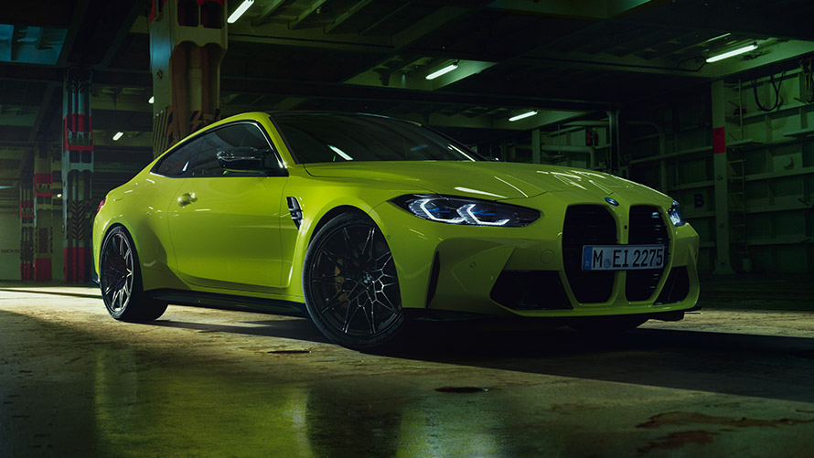

BMW



Beginn
Vorgänger von BMW waren die 1913 von Karl Rapp gegründeten Rapp Motorenwerke GmbH. Als „Grundlage seines Unternehmens“ kaufte Rapp die Firma des aus Berlin stammenden Philipp Dörhöfer, die sich in der Münchener Clemensstraße 46 befand. „Diese wieder herum hatte kurz zuvor in Chemnitz die Firma Schneeweis erworben. Schneeweis baute Flugmotoren unter anderem für den Luftschiffbauer Albert Paul Veeh. Im Zuge der Insolvenz von Veeh war Schneeweis in Schwierigkeiten geraten. Diese waren offensichtlich so groß, dass sich auch die Firma Dörhöfer an Schneeweis verhob und Rapp das Unternehmen übernahm, um Flugmotoren zu fertigen.“[5] Grund für Dörhöfers Übernahme von Schneeweis’ Firma war, dass sie schon Flugmotoren für die Luftschiffbau Veeh GmbH baute und er damit auf jahrelange Erfahrungen zurückgreifen konnte. Später schrieb er an seinen Sohn: „Der Ursprung der BMW ist die Firma Schneeweis in Chemnitz, die über den Luftschiffbau Veeh und das Flugwerk Deutschland, wo auch mein Name genannt ist, die Rapp-Motorenwerke hervorbrachten.“[6] Die daraus entstandene Rapp Motorenwerke GmbH änderte ihren Namen im April 1917 zunächst in BMW GmbH und ein Jahr später, nach der Umwandlung in eine Aktiengesellschaft, in BMW AG. Die bisherige GmbH ging in Liquidation. Die Errichtung der AG war mit der Heeresverwaltung abgesprochen.[7] Der erste Geschäftsführer war bis 1942 Franz Josef Popp.
Im jungen Unternehmen machte sich der aufstrebende Ingenieur Max Friz schnell einen Namen: Er entwickelte 1917 den Flugmotor BMW IIIa mit Überverdichtung, die den Leistungsverlust in der Höhe verringert. Diese Konstruktion bewährte sich insbesondere im Jagdflugzeug Fokker D.VII so gut, dass BMW von der Heeresverwaltung einen Auftrag über 2000 Motoren erhielt. Am 17. Juni 1919 wurde mit einem BMW IV, einer Weiterentwicklung des BMW IIIa ein inoffizieller Höhenweltrekord (Deutschland war nicht Mitglied der FAI) von 9760 Metern erzielt.[8]
Mit dem Ende des Ersten Weltkrieges und dem Versailler Vertrag schien zunächst das Ende des Unternehmens gekommen zu sein: der Friedensvertrag verbot es für fünf Jahre, in Deutschland Flugmotoren – damals das einzige Produkt von BMW – herzustellen. Werbeinserate von 1920 zeigen jedoch, dass BMW nicht ganz dem Verbot folgte.[9][10]
1922 verließ Hauptaktionär Camillo Castiglioni das Unternehmen und nahm die Namensrechte an BMW mit. Er ging zu den Bayerischen Flugzeugwerken (BFW). Diese waren aus den am 7. März 1916 registrierten Bayerischen Flugzeugwerken hervorgegangen, die sich wiederum aus dem Anfang des Jahres in Konkurs gegangenen Gustav-Otto-Flugzeugwerk von Gustav Otto, einem Sohn des Ottomotor-Erfinders Nikolaus Otto, entwickelt hatten. Dieser 7. März 1916 gilt in der offiziellen Unternehmensgeschichtsschreibung als Gründungsdatum von BMW. Mit dem Wechsel von Castiglioni werden aus den Bayerischen Flugzeugwerken (BFW) BMW, am Firmensitz Lerchenauer Straße 76, München 13.[11] Das Unternehmen aber, das bis dahin BMW hieß, wurde zur Südbremse und später dann zur Knorr-Bremse.
1923 entwickelten Max Friz und Martin Stolle das erste BMW-Motorrad, die R 32, und legten damit den Grundstein für eine neue Produktionslinie: Motorräder. Friz brauchte für den Entwurf der R 32 nur fünf Wochen. Bis heute hat sich das Grundprinzip dieses Motorrades erhalten: Boxermotor und Kardanantrieb im Doppelrohrrahmen.
Ab 1924 wurden auch wieder Flugmotoren hergestellt. Der 1930 im Reichsbahn-Ausbesserungswerk Hannover-Leinhausen gebaute „Schienenzeppelin“ wurde von einem BMW-VI-Motor angetrieben.
Start als Automobilhersteller in Eisenach
m Jahr 1928 übernahm BMW die Fahrzeugfabrik Eisenach A. G., den Hersteller des Kleinwagens Dixi, und wurde so zum Automobilhersteller. Am 22. März 1929 produzierte BMW im thüringischen Eisenach sein erstes Serienautomobil. Das Modell hieß 3/15 PS bzw. DA 2 und war eine Weiterentwicklung des Modells Dixi 3/15 DA, das seinerseits ein modifizierter Lizenzbau des britischen Austin Seven war. Der Wagen wurde in Berlin mit einer von Ambi-Budd gelieferten Karosserie, die dem ebenfalls in Austin-Lizenz gebauten Rosengart ähnelte, montiert. 1932 folgte der erste „echte“ BMW der BMW AM-Baureihe mit der Bezeichnung AM1 (für „Automobilkonstruktion München Nr. 1“), d. h. die erste BMW-eigene Automobilkonstruktion, die gegenüber dem BMW 3/15 größer und technisch fortschrittlicher ausfiel (z. B. obengesteuerte Ventile, Vierradbremse, Schwingachse vorn). Die erste Neukonstruktion unter der BMW-Ägide war der 1933 vorgestellte 303 mit 1,2 Liter Sechszylindermotor, eine Konstruktion von Fritz Fiedler (1899–1972). Infolge des ab 1933 wieder stark erweiterten Flugmotorenbaus wurde die Auto- und Motorradsparte fast zum Nebenzweck. Trotzdem gelangen mit den Neuentwicklungen BMW 326 (1935), 327 (1937) und dem 1936 vorgestellten Sport-Roadster 328 attraktive Modelle. Besonders der 328 überzeugte nicht nur durch seine Konstruktion, sondern auch durch zahlreiche Erfolge bei Sportwagenrennen, unter anderem der Mille Miglia 1940. Dieses Modell begründete den Ruf von BMW als Hersteller sportlicher Automobile, der auch nach dem Krieg in Erinnerung blieb. In Großbritannien wurde der 328 als Frazer-Nash-BMW vermarktet, wobei Frazer Nash bereits seit 1934 als BMW-Generalimporteur für das britische Empire fungierte. Die Baupläne der 326/327/328-Reihe dienten später der Entwicklung des Bristol 400.
Bis zum Ende des Zweiten Weltkriegs
Nach der Machtergreifung der Nationalsozialisten erfuhr BMW einen kräftigen Aufschwung durch die Kriegspläne Hitlers. Während Mitte 1933 noch 8.357 Leute in der deutschen Flugzeug- und Flugmotorenindustrie ihren Arbeitsplatz hatten, war die Beschäftigtenzahl Ende 1938 auf fast 180.000 angewachsen. An diesem Aufschwung partizipierte auch BMW. Der Umsatz des Unternehmens betrug 32,5 Millionen Reichsmark (RM) im Jahr 1933 und steigerte sich bis 1939 auf 280 Millionen RM. Der Flugmotorenbau bei der 1934 neu gegründeten Tochtergesellschaft „BMW Flugmotorenbau GmbH“ erfolgte in der neuen BMW Flugmotorenfabrik Allach GmbH (heute MTU Aero Engines) und der BMW Flugmotorenfabrik Eisenach GmbH (Dürrerhof – nach Kriegsende demontiert). Dieser trug 1939 allein 190 Millionen RM zum Umsatz bei. Mit der Übernahme der Brandenburgischen Motorenwerke in Berlin-Spandau im Jahr 1939, die anschließend als BMW Flugmotorenwerke Brandenburg GmbH firmierten, und der Gründung der Niederbarnimer Flugmotorenwerke GmbH im Jahr 1941 mit Standorten in Zühlsdorf und Basdorf expandierte der Geschäftsbereich Flugmotoren auf 90 Prozent des gesamten Umsatzes. Im Jahr 1944 wurden 750 Millionen RM Umsatz von zirka 56.000 Beschäftigten, rund 50 Prozent davon waren Zwangsarbeiter, erwirtschaftet.
Krise und Beinaheübernahme
Nachdem in den Geschäftsjahren 1958 und 1959 hohe Verluste erwirtschaftet worden waren, kam es zu der dramatischen Hauptversammlung vom 9. Dezember 1959. Vorstand und Aufsichtsrat, beide von der Deutschen Bank eingesetzt, legten ein Angebot vor, nach dem BMW an die Daimler-Benz AG (Großaktionär ebenfalls Deutsche Bank) verkauft und die Kleinaktionäre fast enteignet worden wären. Das Schicksal von BMW schien besiegelt, da die Deutsche Bank dank des Depotstimmrechts etwa die Hälfte des Aktienkapitals vertrat. Aber es kam anders: Eine Ablehnungsfront, gebildet aus Belegschaft und Betriebsräten, BMW-Händlern und Kleinaktionären, wehrten das Übernahme-Angebot ab, indem sie mit Hilfe des Darmstädter Aktionärs und Kohlenhändlers Erich Nold (1928–1995[22]) sowie des Frankfurter Rechtsanwalts Friedrich Mathern die Bilanz anfechten ließen, wofür 10 Prozent der Stimmen genügten. Die Bilanz war in der Tat fehlerhaft, da in ihr die Entwicklungskosten für das neue Modell 700 innerhalb eines Jahres abgeschrieben worden waren.[23]
Rolls-Royce
Im Jahr 2003 erhielt BMW die Markenrechte für Rolls-Royce-Automobile von Rolls Royce plc und konnte dann damit die bereits fertig entwickelte Luxus-Limousine mit dem Namen Phantom auf den Markt bringen, für den eigens ein neuer Stammsitz in Goodwood, England, geschaffen wurde. Das ehemalige Werk in Crewe fertigt seitdem nur noch Automobile der ehemaligen Geschwister-Marke Bentley, die bei Volkswagen verblieb.